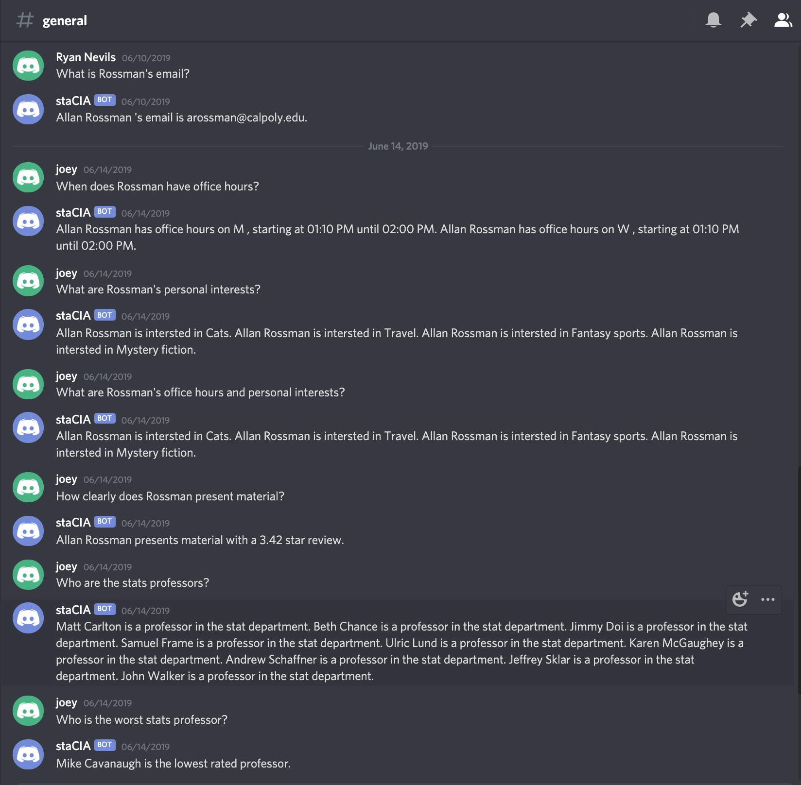
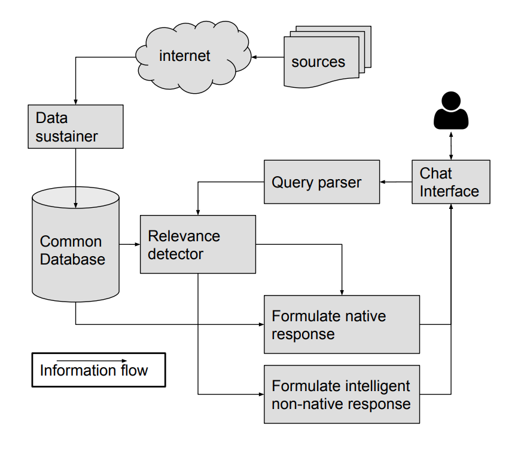
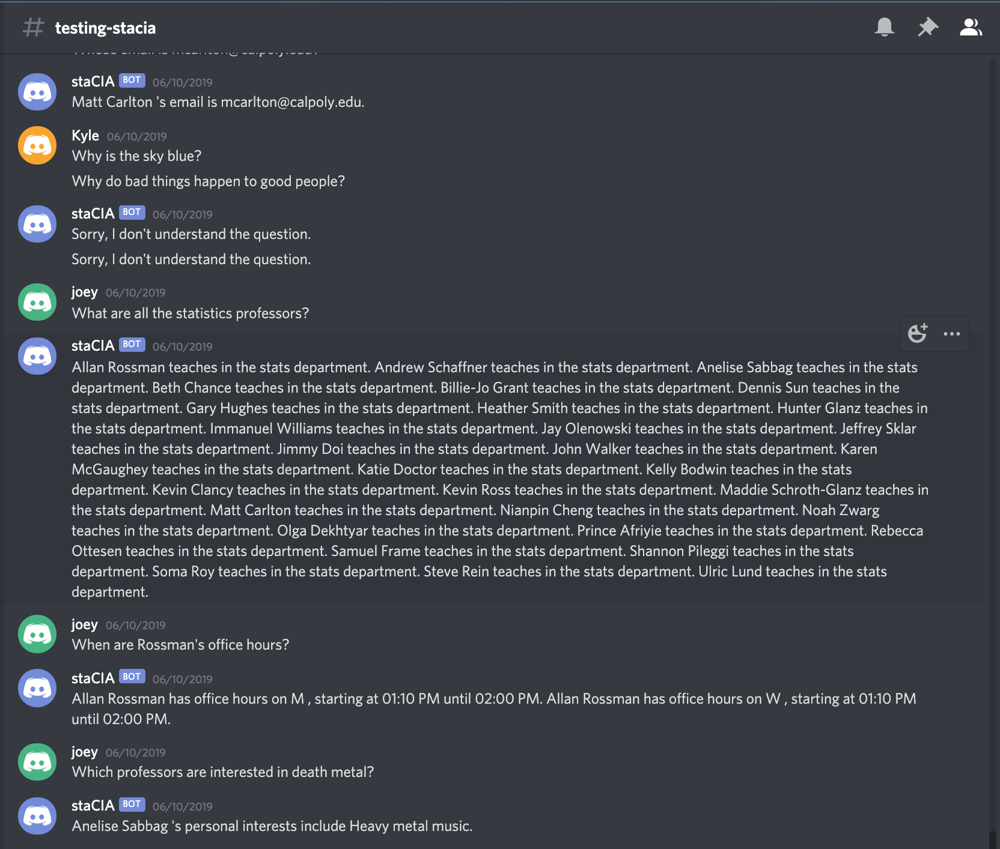

Description
This chat bot was a group project for my “Knowledge and Discovery from Data” class at Cal Poly. The chat bot
provides the user with statistics and general information about Cal Poly’s computer science and statistics
departments.
Example usage:
Implementation
Web Scraping
Information is scraped from various Cal Poly webpages using Beautiful Soup. This includes things like all of the CS and statistics classes descriptions, the class start/end times, the professors personal pages, their official Cal Poly page, their rating on the website “polyratings”, and more.
Data Sustainer
We had to design a database for storage of all this information, and for our database we used MySQL. Given the information available in all the websites we scraped, we created tables that would correspond to this information. For example, we have a database for all the professors, their name, phone number, office hours, email, and other contact info. There is a bash script that runs once every week to scrape the webpages and update the database. This ensures our database won’t go out of date for information such as current class times, and current professors.
Understanding the User's Question
Now that we have databases with relevant information, the challenge is to try to figure out what the user is asking and see if we can reply with the appropriate information.
While definitely imperfect, our idea was to come up with a large list of questions that we think a user might ask, and then try to match the user’s actual query to one of the queries we have in our list. This way, if we can match it to one of our predefined questions, we can know which words to look for when attempting to extract the variables needed for our database lookup. More on this in the next section.
We attempt to match the user’s question to one of our predefined questions using a TFIDF classifier. The TFIDF classifier works by reading all possible questions and generating documents of similar phrasings using NLTK synsets, for a total of around 13000 documents. This is set up upon boot, so when a question is input, it is matched using the cosine similarity retrieval method, returning a score of 0-100%. This method has some flaws, as it is easy to confuse shorter questions which involve fewer words. In an attempt to fix this, we add another classifier, the Levenshtein edit distance implemented in FuzzyWuzzy. This method matches questions which might use slightly similar phrasing, but are overall similar strings. Using similar ideology to ensemble methods, we combine the scores returned by both methods in an average from 0-100%, which is our confidence level. If the confidence is too low (we determined 45% using testing), we respond that we don’t understand the question. Otherwise, we proceed to the next step, variable identification with the highest confidence matched question.
Information Retrieval
After the discord message had been matched to one of our questions, we identified the variables in the question as they appear in our database. Since all variables appear with square brackets in our generic questions, we were able to use a switch statement to check which variables were in our question. The switch had various procedures best suited for handling each type of variable. When a variable was identified, instances of it were fetched from the database and passed to a function which found the closest match. In the case of email, phone numbers, and poly ratings, we were able to simply use regex, since these could only appear in a specific format. Courses were also matched using regex, since each course had a course number associated with it. Weekdays were matched by checking for any weekday names in the user’s question. Interests were matched using stemmed words, since this allowed us to check whether the root meanings of words were the same, such as in death metal versus heavy metal. For all other situations, such as names, we used edit distance and checked whether the most similar match was above a confidence threshold. This method worked very well, and was able to identify variables in almost every case they appeared, assuming we had matched the question. If the question was mis-identified, or no matching variables were found, this caused an error in the SQL queries which obtained answers to the question, and returned a message to the user that something went wrong.
General Architecture:
More examples:
Resources
As per our professor’s request, I cannot share the source code for a few years due to potential plagiarism issues.